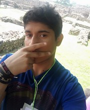
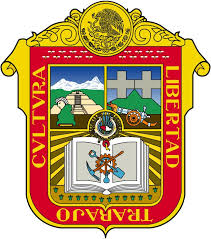

Lehi R. Soto
About Me

My name is Lehi and I go by Leni. I was born in the State of Mexico and live my family here. I am currently working at coffee-internet. I have 3 brethen, I am the smallest child in my family. I love to play videogames, watch anime, and I like to watch series and listent to music.
State of Mexico

State of Mexico
The State of Mexico (Edomex) is one of the 32 federal entities of Mexico, located in the center of the country. Its capital is Toluca de Lerdo and its most populated city is Ecatepec de Morelos. It borders to the north with Querétaro and Hidalgo, to the east with Tlaxcala and Puebla, to the south with Morelos and Guerrero, and to the west with Michoacán, almost completely surrounding Mexico City.